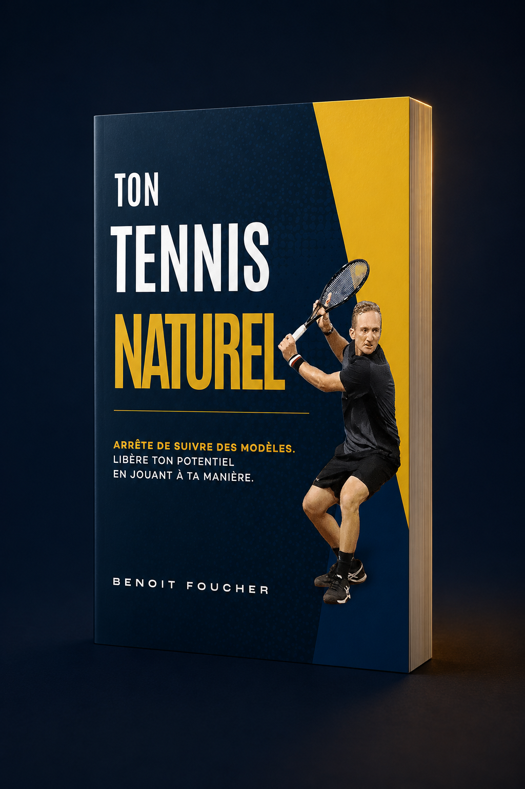

Coach ATP · Tennis en ligne
Ton meilleur tennis existe déjà. Il est là à l'entraînement, puis il disparaît dès que le score compte. Réduire cet écart commence par un jeu construit autour de ton corps, pas celui d'un autre.
Ça te parle ?
Tu t'entraînes plus que les joueurs qui te battent. À l'échauffement, ton coup droit est propre, ton timing est là, et pendant quelques jeux ça tient. Puis le score se resserre. Ton bras se crispe, tes jambes se figent, et la balle que tu as frappée dix mille fois part dehors.
Tu perds contre quelqu'un que tu battrais neuf fois sur dix à l'entraînement. Tu rejoues les points pendant tout le trajet du retour, en sachant que tu vaux mieux que ça. Et au fond, il y a cette question que tu ne dis pas à voix haute : c'est peut-être juste mon niveau.
Alors tu fais ce que tu as toujours fait. T'entraîner plus dur, prendre un cours de plus, copier la technique d'un pro vue sur YouTube. Pendant une semaine, ça semble différent. Puis tu remarques que tu es toujours sur le même plateau, et le prochain match se passe comme tous les autres.
Ce n'est pas ton effort. Et ce n'est certainement pas ton talent. C'est qu'on t'a donné un jeu qui n'a jamais été construit pour toi.
Ce en quoi je crois
Pendant des années, on t'a donné le même modèle. Tiens la raquette comme ça. Termine ton geste comme ci. Copie les joueurs que tu regardes à la télé. Mais ton corps n'est pas leur corps. Forcer leur technique, c'est la raison pour laquelle ton jeu semble mécanique, et la raison pour laquelle il s'effondre dès que la pression est réelle.
Nous sommes tous différents, alors le travail consiste à t'aider à trouver ta différence. Pas à imposer une technique, mais à explorer ce que ton corps fait naturellement, puis à construire autour des coups efficaces et reproductibles. Quand le mouvement te correspond, il ne te coûte plus rien à produire, et c'est là qu'il survit à un score serré.
Ensuite tu travailles les deux choses qui décident vraiment des matchs : rester relâché sous pression, et un plan assez clair pour y faire confiance à 4-4.
C'est ça, Ready2Perform. Sans forcer. Sans copier. Ton tennis le plus naturel et le plus efficace.
Comment je coache
Découvre comment ton propre corps est câblé pour bouger, puis construis tes coups autour de ça plutôt qu'autour d'un modèle vu à la télévision.
Le relâchement et la respiration travaillés volontairement, pour que le calme soit vraiment là quand le score est serré, au lieu de disparaître pile au moment où tu en as besoin.
Une confiance bâtie sur ce que tu contrôles, pour arrêter de douter et savoir quoi faire sur les quelques points qui décident du match.
Commence ici
Toute l'approche dans un livre court : pourquoi tu plafonnes, et comment bâtir un jeu autour de ton corps plutôt que celui d'un autre. C'est le fondement sur lequel chaque joueur commence ici, et ça ne te coûte rien.

Ce qu'en disent les joueurs
« Benoit est un super coach, point. »
« Une connaissance profonde du tennis, et un accompagnement personnalisé plutôt que des règles rigides. Son approche intuitive et adaptative a amélioré ma technique, mon équilibre et mon jeu en général. »
« Je gagne, mais à aucun moment je ne pense à gagner. Je suis concentré sur quoi faire ensuite. Au final, le résultat n'est qu'une conséquence de la bonne attitude. »


Qui je suis
J'ai couru après le circuit depuis l'âge de six ans, avec une philosophie d'une simplicité brutale : aller fort, aller fort encore, pousser jusqu'à m'écrouler. L'épuisement me servait de preuve que j'en avais assez fait. Ce que ça a produit, en réalité, c'est du surentraînement, des blessures permanentes, et un jeune homme en forme sur le papier et à l'agonie sur le court.
Tout ce que j'ai raté est devenu ce que j'enseigne aujourd'hui. C'est le coaching que je fais maintenant, sur le circuit comme en ligne : individuel, durable, et bâti autant sur la tête que sur le corps.
Le fond de tout ça
Tu as déjà le niveau. Tout le travail consiste à le faire apparaître quand ça compte, dans un jeu qui t'appartient vraiment. C'est vrai que tu coures après un classement ou que tu veuilles simplement encore aimer ce sport à soixante ans.
Commence par le livre. Il est gratuit, il est court, et c'est là que tout commence.
Tu sais déjà que tu veux travailler avec moi ? Réserve un appel gratuit.